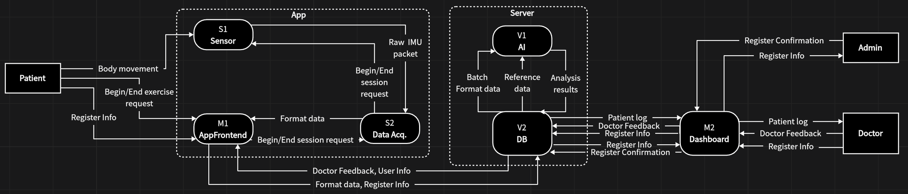

| Date | Authors | Description |
|---|---|---|
| May 3, 2026 | Zhiqi ZHANG | Total Interface Specification v1.0: consolidated, post-negotiation interface specification for all cross-team data exchanges |
| Jun 2, 2026 | Zhiqi ZHANG | v2.0: Second-round update for S1, S2, M1 interfaces; V1, V2, M2 pending second-round submission |
1. Overview
This document is the consolidated, post-negotiation interface specification for all cross-team data exchanges in the system. All conflicts identified during the integration phase have been resolved (see Total SD Conflicts and Solutions for details).
Source documents:
- S1: S1 confirmed to follow S2's design (file sent by Zhihang YU)
- S2: S2 Interface Specification v0.1
- V1: V1 confirmed no conflicts with V2 (file sent by Yanbo QIAO)
- V2: V2 Backend Integration Guide (file sent by Sergio Moniz)
- M1: M1 Interface Specification
- M2: M2 Web Backend API Specification (file sent by Yihang LI)
- Conflict resolution: Total SD Conflicts and Solutions
1.1 System Data Flow Diagram

The overall architecture follows a design where all teams interact through two central hubs: S2 (on the App/device side) and V2 (on the Server side). There is no direct interface between S2 and V2; instead, M1 acts as the intermediary for all App-to-Server data transfers. This concentrates interfaces around S2 and V2, making integration straightforward.
App side (same device):
- S1 (Sensor) provides raw IMU data to S2
- S2 (Data Acq.) processes data and delivers formatted data to M1
- M1 (AppFrontend) manages session control with S2 and handles all communication with the Server
Server side (cross-device, HTTP REST):
- V2 (DB) is the central backend; all other teams communicate with V2
- V1 (AI) exchanges batch format data, reference data, and analysis results with V2
- M1 sends format data and register info to V2 and receives user info and doctor feedback
- M2 (Dashboard) exchanges patient logs, doctor feedback, register info, and register confirmation with V2
1.2 Interface Summary
| ID | From | To | Data Flow | Transport |
|---|---|---|---|---|
| IF-S1-S2 | S1 (Sensor) | S2 | Raw IMU packet | Function call |
| IF-S2-S1 | S2 | S1 (Sensor) | Begin/End session request | Function call |
| IF-M1-S2 | M1 (AppFrontend) | S2 | Begin/End session request | Function call |
| IF-S2-M1 | S2 | M1 (AppFrontend) | Format data | Function call |
| IF-M1-V2 | M1 | V2 (DB) | Format data, Register Info | HTTP REST API |
| IF-V2-M1 | V2 (DB) | M1 | User Info, Doctor Feedback | HTTP REST API |
| IF-V1-V2 | V1 (AI) | V2 (DB) | Analysis results | HTTP REST API |
| IF-V2-V1 | V2 (DB) | V1 (AI) | Batch Format data, Reference data | HTTP REST API |
| IF-M2-V2 | M2 (Dashboard) | V2 (DB) | Doctor Feedback, Register Info, Register Confirmation | HTTP REST API |
| IF-V2-M2 | V2 (DB) | M2 (Dashboard) | Patient log, Register Info | HTTP REST API |
2. IF-S2: App-Side Interfaces
All interfaces in this section are on the same device (App side), using function calls.
2.1 IF-S1-S2: Raw IMU Packet
| Attribute | Value |
|---|---|
| Dataflow direction | S1 → S2 |
| Cross-device | No (same device) |
| Transport | Function call |
| Service provider | S1 |
| Service user | S2 |
2.1.1 s1.sensor.read()
Read a batch of IMU samples collected since the last call.
- Parameters: None
- Returns: List[SensorSample] (may be empty if no new data is available)
Example:
for s in samples:
print(s.timestamp, s.roll, s.pitch, s.yaw)
2.1.2 s1.sensor.status()
Query the current status of the sensor hardware connection.
- Parameters: None
- Returns: SensorStatus
Example:
if not st.connected:
print("Sensor error:", st.errorMessage)
2.1.3 class SensorSample
A single IMU sensor reading at one point in time.
- timestamp (int): Unix timestamp in milliseconds.
- deviceId (str): Unique sensor device identifier.
- deviceName (str): Human-readable sensor name (e.g.
"WTL1"). - accX, accY, accZ (float): Accelerometer, in g.
- gyroX, gyroY, gyroZ (float): Gyroscope, in deg/s.
- roll, pitch, yaw (float): Orientation angles, in degrees.
2.1.4 class SensorStatus
Current state of the sensor connection.
- connected (bool): True if sensor is connected and producing data.
- errorMessage (str or None): Error description if in error state. Possible values:
"sensor_disconnected","data_corruption","timeout".
2.2 IF-S2-S1: Begin/End Session Request
| Attribute | Value |
|---|---|
| Dataflow direction | S2 → S1 |
| Cross-device | No (same device) |
| Transport | Function call |
| Service provider | S1 |
| Service user | S2 |
S2 calls S1's session start/end methods to control raw data collection. Defined in SRS use cases IUC-S2-03-01 and IUC-S2-03-02.
2.2.1 s1.session.start(sessionMetaData)
Start raw data collection on S1.
- Parameters:
- sessionMetaData (dict): Session meta data including rehabilitation training category, etc.
- Returns: Confirmation signal on success; error signal on failure.
2.2.2 s1.session.stop()
Stop raw data collection on S1.
- Parameters: None
- Returns: Confirmation signal on success; error signal on failure.
2.3 IF-M1-S2: Begin/End Session Request
| Attribute | Value |
|---|---|
| Dataflow direction | M1 → S2 |
| Cross-device | No |
| Transport | Function call |
| Service provider | S2 |
| Service user | M1 |
2.3.1 s2.session.start(sessionId, userId, sensorJointMapping, payloadStatus)
Start a data acquisition session. S2 begins reading sensor data from S1, validating, buffering, and delivering to M1.
- Parameters:
- sessionId (int): Session identifier, server-generated by V2. MUST be valid.
- userId (int): User identifier, referencing the V2 users table. MUST be valid.
- sensorJointMapping (dict, optional): Mapping from sensor device ID to joint name. E.g.
{"1IYw...": "left_knee", "xR3f...": "right_elbow"}. Fixed for the entire session. - payloadStatus (str): Exercise/task type for this session (e.g.
"bend_knee_10"). Fixed for the entire session.
- Returns: StartResult
- Raises: ValueError if required parameters are invalid.
Example:
1, 1,
{"1IYw...": "left_knee", "xR3f...": "right_elbow"},
"bend_knee_10"
)
if result.success:
print("Acquisition started")
2.3.2 s2.session.stop()
Stop the current session. S2 flushes remaining buffered data, then enters idle state.
- Parameters: None
- Returns: SessionSummary
- Raises: RuntimeError if no session is active.
2.3.3 class StartResult
- success (bool): Whether the session started successfully.
- errorMessage (str or None): Reason for failure. Possible values:
"session_already_active","sensor_not_connected".
2.3.4 class SessionSummary
- sessionId (int): Identifier of the closed session.
- sampleCount (int): Total valid samples collected.
- errorCount (int): Total rejected samples.
- startTime (str): Session start timestamp (ISO 8601).
- endTime (str): Session end timestamp (ISO 8601).
2.4 IF-S2-M1: Format Data
| Attribute | Value |
|---|---|
| Dataflow direction | S2 → M1 |
| Cross-device | No |
| Transport | Function call |
| Service provider | S2 |
| Service user | M1 |
2.4.1 s2.data.read()
Read all Format data accumulated since the last call. Returns a FormatData object containing three asynchronous data lists (sensor readings, target angles, and error events), plus the session context set at session start.
- Parameters: None
- Returns: FormatData
- Notes: The three lists in FormatData are asynchronous: they may have different lengths on each call, because each sensor samples independently and target angle computation runs at its own rate.
Example:
for s in data.sensorData:
print(s.timestamp, s.deviceId, s.roll, s.pitch, s.yaw)
for t in data.targetAngles:
print(t.timestamp, t.angle)
2.4.2 class FormatData
Output data structure of S2.
- sessionContext (SessionContext): Session-level info, fixed for the entire session.
- sensorData (List[SensorSample]): Validated sensor readings from all sensors since last read. Uses SensorSample defined in 2.1.3.
- targetAngles (List[TargetAngle]): Target angles computed by S2 core since last read.
- errors (List[ErrorEvent]): Error events since last read.
2.4.3 class SessionContext
- sessionId (int): Session identifier, server-generated by V2.
- userId (int): User identifier, referencing the V2 users table.
- sensorJointMapping (dict): Sensor device ID → joint name mapping.
- payloadStatus (str): Exercise/task type (e.g.
"bend_knee_10").
2.4.4 class TargetAngle
- timestamp (int): Unix timestamp in milliseconds when computed.
- angleID (str): Angle identifier.
- angle (float): Computed target angle, in degrees.
2.4.5 class ErrorEvent
- timestamp (int): Unix timestamp in milliseconds.
- sensorId (str or None): Sensor that caused the error, or None if not sensor-specific.
- errorType (str):
"sensor_disconnected","validation_failure","timeout". - message (str): Human-readable error description.
3. IF-V2: Server-Side Interfaces
All interfaces in this section go through V2's HTTP REST API.
V1, V2, and M2 have not yet submitted their second-round interface documents. This section will be updated once their submissions are received. For the current version, refer to Total Interface Specification v1.0.
4. Communication Methods
4.1 Function Call (Same Device)
Used for all App-side interfaces (IF-S1-S2, IF-S2-S1, IF-M1-S2, IF-S2-M1). Components on the same device communicate through direct function calls. If running in different processes, the function signatures remain the same but the underlying transport is replaced by an IPC mechanism.
- S1 provides s1.sensor.read(), s1.sensor.status(), s1.session.start(), and s1.session.stop() for S2.
- S2 provides s2.session.start(), s2.session.stop(), and s2.data.read() for M1.
4.2 HTTP REST API (Cross-Device)
Used for all Server-side interfaces (IF-M1-V2, IF-V2-M1, IF-V1-V2, IF-V2-V1, IF-M2-V2, IF-V2-M2). V2 exposes URL endpoints; other teams send HTTP requests.
- Method: GET (read), POST (create/send), PATCH (update), DELETE (remove)
- URL: endpoint path (e.g. /sessions/:id/end)
- Body: JSON payload
- Response: status code (200, 201, 204, 400, 404, 409, 500) + optional JSON body
- Error format: { "error": "Human-readable message" }
Posted by Team S2 · DSD 2025–2026 · UTAD × Jilin University